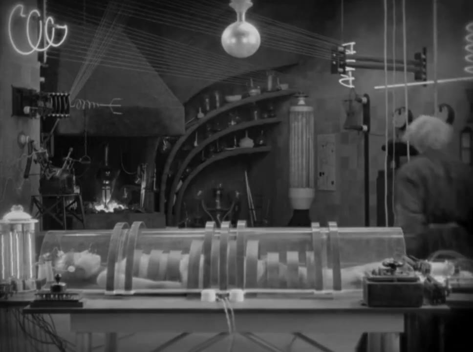

Metropolis, frame at 1:23:20
Fritz Lang · 1927 · Silent film, black and white (frame)
Free to use
The robot Rotwang builds was made by the sculptor Walter Schulze-Mittendorff around a whole-body plaster cast of Brigitte Helm. He built it from plastic wood, a wood-filler he came across by chance, so it would look like metal and still let her move a little. Helm was cut and bruised inside it, and once fainted for lack of air during the long transformation shot. A damaged print of the original cut turned up in a museum in Argentina in 2008.
Open in The ArtchiveFull-size file ↗